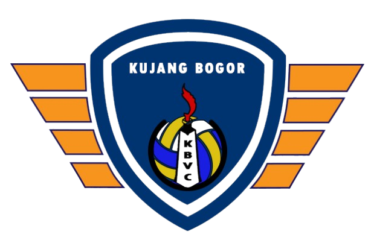

Galeri Kegiatan



Guna memberikan sarana dan prasarana bagi calon atlet bola voli secara dini serta konsisten dalam berlatih, sehingga terbentuk jasmani dan rohani yang sehat, menguasai permainan bola voli untuk mencapai prestasi yang optimal berguna bagi bangsa dan negara
1. Menyediakan sarana latihan yang memadai
2. Program latihan terstruktur
3. Membentuk mental dan fisik
4. Mengembangkan teknik
5. Mencetak atlet berprestasi
Kujang adalah senjata tradisional masyarakat Sunda yang muncul pada abad ke-8. Kujang melambangkan keberanian, ketajaman berpikir, kehormatan, serta semangat juang yang tinggi. Nilai-nilai tersebut menjadi dasar semangat Kujang Bogor Volleyball Club dalam membina atlet yang disiplin, berkarakter, dan bermental juara.
0
0
0